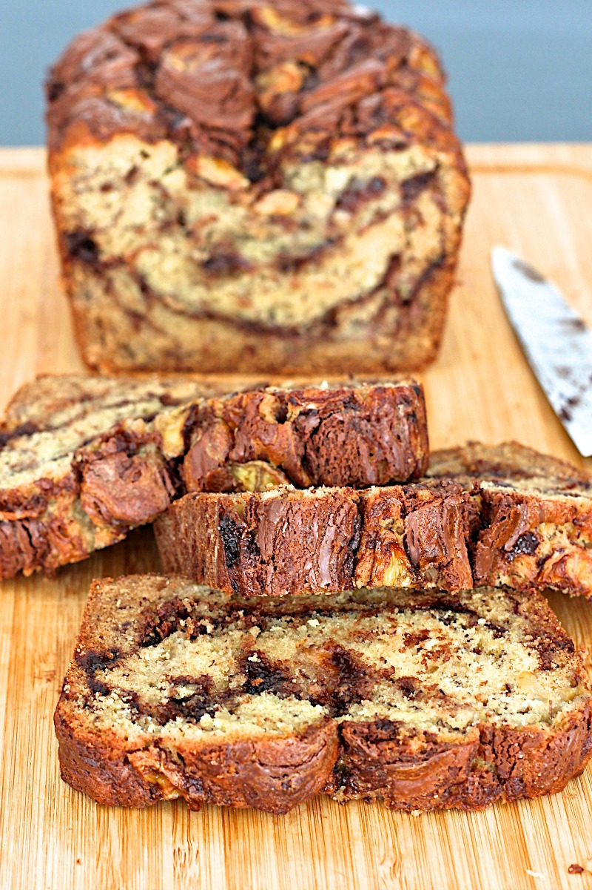

Nutella Banana Bread

Description
This absolutely scrumptious snack is not only low in sugar and calories but will leave your taste buds in a state of bliss.
Ingredients:
- ½ cup/113 grams unsalted butter (1 stick), plus more for greasing the pan
- 2 cups/256 grams all-purpose flour, plus more for flouring the pan
- 1 teaspoon baking soda
- ¾ teaspoon kosher salt
- 1 ½ cups/310 grams mashed bananas, from about 3 medium bananas
- ⅔ cup/134 grams granulated sugar
- ¼ cup/57 grams plain Greek yogurt
- 2 eggs
- 1 teaspoon vanilla extract
- ⅓ cup/99 grams chocolate-hazelnut spread, like Nutella
Steps: (Serving Size 1 Person)
- Heat oven to 350 degrees. Butter and flour a 9x5x3-inch loaf pan.
- Stir the flour, baking soda and salt together in a bowl.
- Brown butter: Melt butter in a light-colored saucepan over medium heat. Cook butter, occasionally scraping the bottom and sides of the pan with a rubber spatula until it turns a deep golden brown and smells nutty. Don’t walk away from the pan during this process. The butter will go from browned and nutty to acrid and burnt in moments. Transfer butter to a large heat-safe mixing bowl and let it cool slightly.
- When the butter has cooled a bit, add the mashed bananas, sugar, yogurt, eggs and vanilla extract. Stir until well combined, then add the flour mixture and stir until just combined. Do not overmix.
- Pour half the batter into prepared pan and spread it evenly with a knife or offset spatula. Spoon half the chocolate-hazelnut spread in several dollops over the top and use a toothpick or skewer to swirl it into the batter. Spoon and spread the remaining batter over the top followed by dollops of the remaining spread. Swirl in the spread, then bake the bread for 55 to 60 minutes or until golden brown and a toothpick inserted into the center comes out clean.